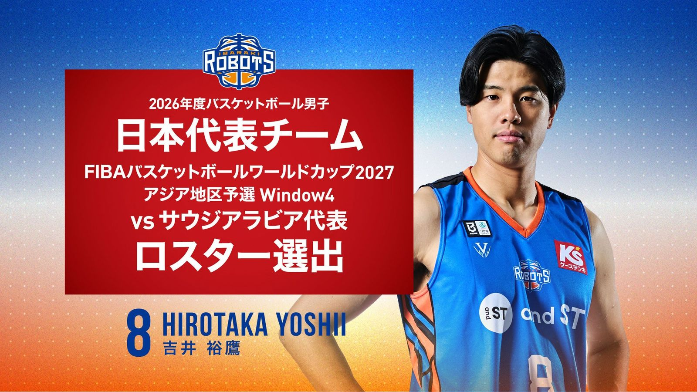

茨城ロボッツ・吉井裕鷹選手、 日本代表ロスターに選出 —— FIBAワールドカップ2027アジア予選、サウジアラビア戦
茨城ロボッツの吉井裕鷹選手(28)が、8月28日未明(日本時間)にサウジアラビアで行われる「FIBAバスケットボールワールドカップ2027 アジア地区予選 Window4」のサウジアラビア代表戦で、日本代表のロスターに選出されたと茨城ロボッツが8月27日発表した。

ジッダで日本時間28日未明にキックオフ、テレビ朝日が地上波生中継
対戦カードは日本代表(FIBAランキング22位) 対 サウジアラビア代表(同65位、いずれも2026年7月13日時点)。会場はサウジアラビア・ジッダのキング・アブドゥッラー・スポーツシティ・アリーナで、現地時間8月27日夜、日本時間では8月27日26時(=28日午前2時)にティップオフを迎える。国内ではテレビ朝日系列が地上波生放送し、ABEMA・DAZN・TVerでも生配信される。同じくW杯予選Window4のサウジアラビア戦では、大阪エヴェッサの藤田弘輝ヘッドコーチも日本代表コーチに選出されている。
SF吉井裕鷹、2026年から茨城ロボッツで新シーズン
吉井裕鷹選手は1998年6月4日生まれ、大阪府出身。ポジションはSF、身長196cm・体重96kg。大阪学院大学を経て、2018-19シーズンに大阪エヴェッサと特別指定選手契約でプロ入り。2020-21シーズンも特別指定選手としてアルバルク東京でプレーした後、2020年から2024年までアルバルク東京に正式加入。2024年から2026年までは三遠ネオフェニックスに在籍し、2026年から茨城ロボッツに加入した。
2024年パリ五輪も経験、代表歴は豊富
日本代表としては、2022年のFIBAアジアカップ2022、2023年のFIBAバスケットボールワールドカップ2023アジア地区予選および本大会、2024年の第33回オリンピック競技大会(パリ)、2025年のFIBAアジアカップ2025予選・本大会、そして2025年以降のFIBAバスケットボールワールドカップ2027アジア地区予選と、近年の主要な国際大会に継続して選出されてきた。今回のロスター入りも、こうした代表での実績の積み重ねによるものとみられる。
出典: 株式会社茨城ロボッツ・スポーツエンターテインメントプレスリリース「#8 吉井 裕鷹選手 2026年度バスケットボール男子日本代表チーム「FIBAバスケットボールワールドカップ2027 アジア地区予選 Window4」 vsサウジアラビア代表 ロスター選出」（PR TIMES・2026年8月27日）
https://prtimes.jp/main/html/rd/p/000000453.000037407.html